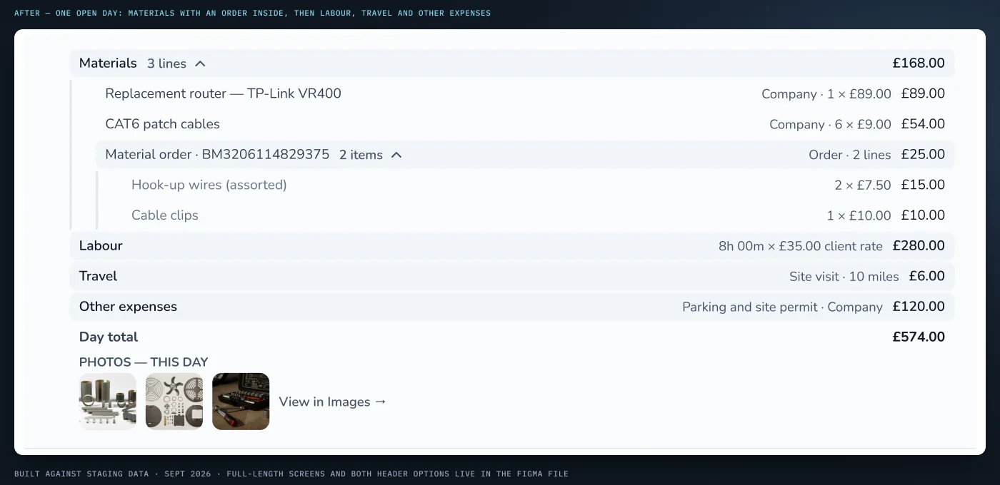
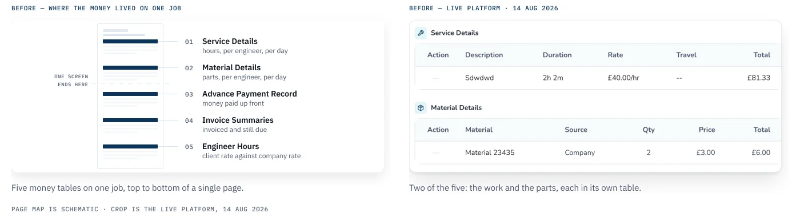
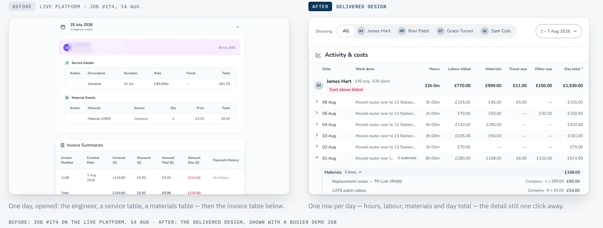
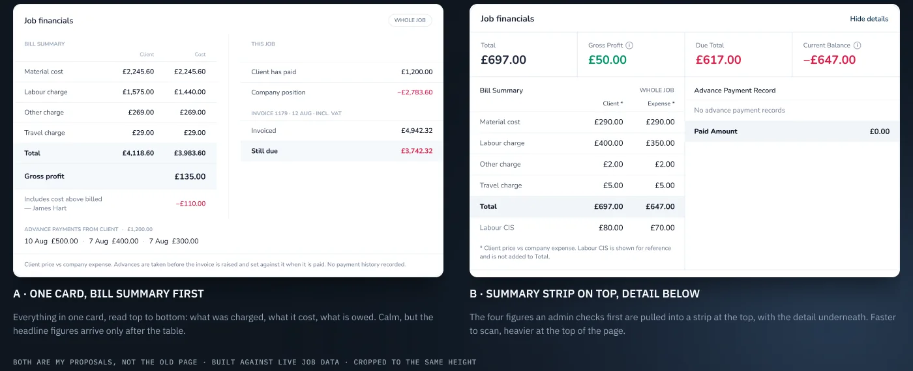
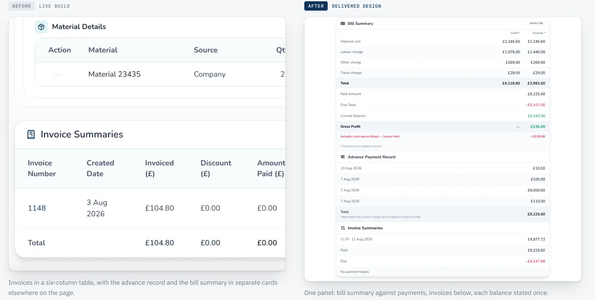
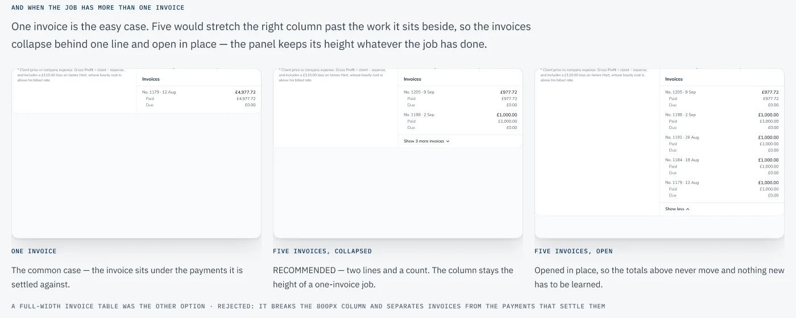
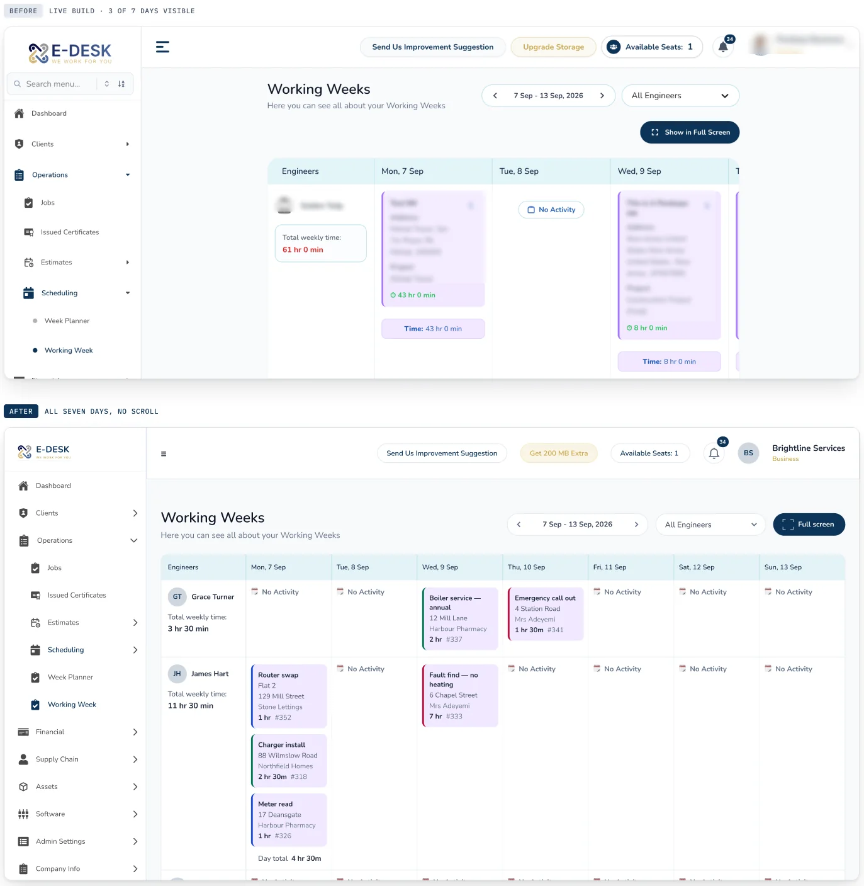
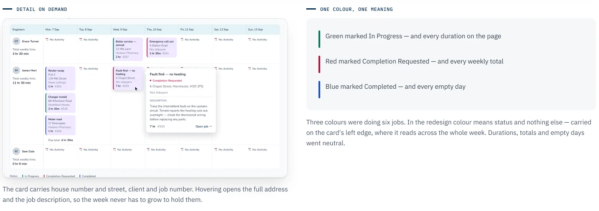

01 · Field-service SaaS · Client project
Every number was already on the page.
A job sheet is read once, at the end, when somebody checks the money. I redesigned it, and the week planner beside it, inside a live platform whose colours, components and 800px column were not mine to change.
The case in 30 seconds
- The problem
- An admin checking what a job cost, what was charged and what is still owed had to read five separate money tables, and the week planner showed three days of seven.
- What I did
- Redesigned the job sheet and the week planner inside the client's live platform: their colours, components and 800px column, checked label by label against the running build.
- The result
- Five tables became one panel read top to bottom, all seven days fit without scrolling, and zero new colours were introduced. Shipped to staging, then refined on real job data.

01 — What the job sheet had to answer
Nothing was missing. Nothing was easy to find.
An admin opens a job sheet to answer three questions: what did this job cost us, what did we charge, and what is still owed. On the live page those answers sat in five separate tables, and the three balances that mattered most appeared twice.

02 — One day of work
Each day was three tables deep. Now it is one row.
Every day was its own accordion, and inside it each engineer had a service table and a separate materials table, each with its own total. Checking one day meant opening it and adding the numbers up by eye.
Every day was an accordion holding a service table and a materials table, each with its own total.
One row per day: hours, labour, materials and a day total, with the detail one click away.

03 — How the work was checked
A spec document existed. The running build disagreed with it.
So I treated the live build as the only source of truth and read every label and figure off it before drawing anything. Four things only turned up by doing that.
All corrected to what a user already reads on screen.
The job carries one due figure against the bill; each invoice carries its own, calculated differently. Showing them together without saying so would have been an expensive mistake.
One invoice showed Paid £9,225.60 and “No payment history” in the same row. Both true, but only if you know advances are recorded separately. The redesign says so in a sentence.
Confirmed with the developer, and it ruled out the two-column layout I had been drawing.
04 — The layout decision
Two ways to lay out the same figures.
The figures were never in doubt; where they sit was. Both options were built against live job data inside the 800px column, then weighed on two tests: does the whole answer fit one screen, and does every number sit next to the label it belongs to?

05 — The job sheet, before and after
Five tables became one panel, read top to bottom.
The panel runs in the order an admin reads it: what the job was charged, what it cost us, what has been paid, what is still owed. Every figure appears once, every amount lands on the same right edge, and the three balances that used to show up twice now appear where they are decided.
Five money tables on one page, and the three balances that matter appeared twice.
One panel in reading order: every figure stated once, every amount on the same right edge.

And when the job has more than one invoice
Five invoices would stretch the column past the work it sits beside, so they collapse behind one line and open in place. The panel keeps its height whatever the job has done.

06 — What the live data changed
The design shipped. Then the real jobs arrived and changed three things.
A demo job is tidy. On staging, engineers were booking travel and sundry expenses as well as parts, materials arrived as supplier orders rather than single lines, and a job carried eight engineers instead of four. Each broke a rule the first design relied on, so each got a fix with a reason behind it.
Travel and sundry expenses were inside the day total but had no column, so the row never added up on screen. They now have their own columns.
Supplier orders nest under Materials with the full reference and a line count, so the day keeps one number and the detail stays one click away.
With eight engineers the header leaves the screen. I built a repeated header and a sticky one, and recommended sticky: no extra rows, and it holds for thirty days.
07 — The second page: working weeks
Three days of seven. The rest were behind a scrollbar.
The week planner sits in the same 800px column, and each job card spent four lines on the full address and the project name. Monday to Wednesday fitted; Thursday to Sunday did not.
“A fire-safety engineer can run five or more jobs in a day — a card that tall makes the week unreadable.”
The client, who runs his own trades business on the platform
Four-line job cards meant three days of seven fitted on screen.
Cards cut to house number, client and job number: all seven days visible, detail on hover.


08 — The rules I worked inside
Four things I was not allowed to change.
None of them were negotiable, and together they decided most of the design. This was not a free redesign; it was a clarity job inside somebody else's build.
- 01 — The palette
- No colour or style changes. The client asked for clarity, not a new look, so every improvement had to come from order, spacing, alignment and wording.
- 02 — The column
- An 800px content column, platform-wide. It killed a two-column financial panel I had already drawn and sent the layout back to the drawing board.
- 03 — The component set
- No new design system. Existing components, extended where they had to be: a size axis on the button, a row component for money lines.
- 04 — The build in flight
- The developers were already implementing. Late structural ideas cost them rework, so after delivery I kept changes minor and routed everything through the client.
09 — In short
The data was right all along. The job was to make it readable.
An admin now answers the three questions (what did this job cost us, what did we charge, what is still owed) on one screen instead of five, and reads a week's work without a scrollbar.
“Happy with the cooperation, highly recommended.”